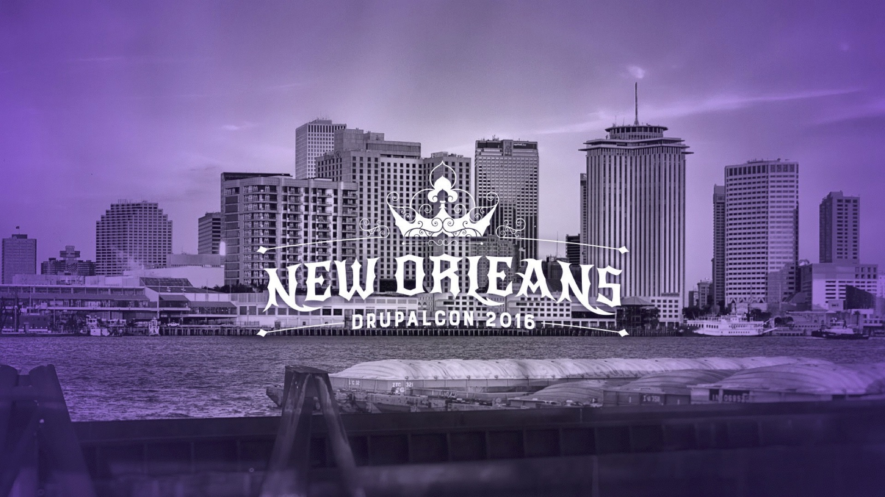
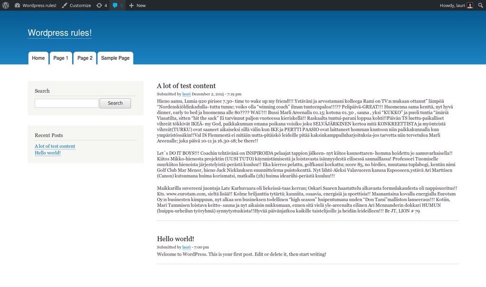

Just Right: Goldilocks and CMS theme systemsWe want this to be a big discussion / point out the mics?
bit.ly/goldnola2016You can also visit the session node on the DrupalCon New Orleans site if that's easier.
Lauri Eskola
lauriii
Drupal 8 theme system co-maintainer
Drupal Craftsman @ Druid
Scott Reeves
Cottser
Drupal 8 theme system co-maintainer
Stable theme maintainer
Provisional D8 core committer
Team Lead @ Digital Echidna
Personas
Lauri - Personas
These are the developer personas that interact with the theme system.
Accommodating the different personas (allowing both UI and code for many tasks) makes things more complex.
Certain decisions are made with these personas in mind and they may prioritize one or more over the others.
Different CMSes prioritize these in a different way (more on that later)
Frontend developer / themer
Backend developer
Site builder
Mozilla personas
Scott - Mozilla Personas
Mozilla has personas that are documented with names and description of what they would do
George (designer)George (designer)
Denise (lightweight JavaScripter)Denise (lightweight JavaScripter)
Emily (corporate web app developer)Emily (corporate web app developer)
Alexander (Firefox add-on developer)Alexander (Firefox add-on developer)We thought this was interesting because it seemed similar to our module developer
Priorities
Scott - Priorities
Different CMSes prioritize the personas differently
Flexibility and how usable is it?
Often the prioritization is not explicit and sometimes whoever is driving the change determines the priorities, often with themselves in the #1 spot.

We looked at some other CMSes to try to determine a rough priority. This is not scientific.
Drupal
Site builder
Backend
Themer
We have a mission but not personas, we would like to more fine-grained personas defined.
These prioritizations are based on flexibility and usability
site builder, backend, themer
WordPress
Themer
Site builder
Backend
Does it have personas?
Theming is not as usable but is very flexible
themer, site builder, backend
Joomla
Site builder
Themer
Backend
At least has some rough personas
We looked at Joomla and…
site builder, themer, backend
Concrete5
Site builder
Backend
Themer
Does it have personas?
We looked at Concrete5 and…
site builder, backend, themer
We landed on the same prioritization as Drupal
Problems
Lauri - Problems
Beyond the clash that sometimes happens with these personas,
the theme system has some other things to deal with.
Security
Autoescape
User generated content
Backwards compatibility
Don't break people's sites
Still be able to evolve
Stable theme is a hacky way to do this in D8 and adds another layer of complexity
UI/code mismatch
Set a field order in manage display
Themer overrides the template and moves the fields around
This breaks the UI. In the end themers have the final say for the most part.
Complexity
All these and related make the theme system complex and hard to evolve.
Frameworks have
no site builder persona
Scott - Frameworks
Lower complexity in the theme system
Example: Symfony people may think we are using Twig wrong but they are not using Twig in a CMS context so it’s completely different. Twig is just a tool and the context in which it is used will change how it is used. We have to account for the site builder persona.
CMS often comes with preset templates and styling also.
The short version of this is in most cases we shouldn't be comparing CMSes to frameworks.
Logo is the simplest example
Lauri - Logo
In Drupal you can change the logo in Appearance
You could also hardcode the logo into the page template
When you hardcode the logo markup you break the UI and potentially break translation/localization
WordPress doesn't have logo functionality at all
Forms are horrible to theme
Lauri - Forms
Drupal forms are good for backend and site builder but themers have very little control and can't create forms from a template
Some systems give you a bit more control over the forms for example Joomla and Concrete5. Joomla hardcodes all the form markup, Concrete5 has a form builder PHP class.
Discuss
Have you seen examples in other systems that you think are valuable?
Which persona(s) to prioritize (always the same?)
Who decides and when?
Should we prioritize at all? Is making everyone happy possible?
Components offer a reset switch but will we end up in a similar place?
Sprints Friday